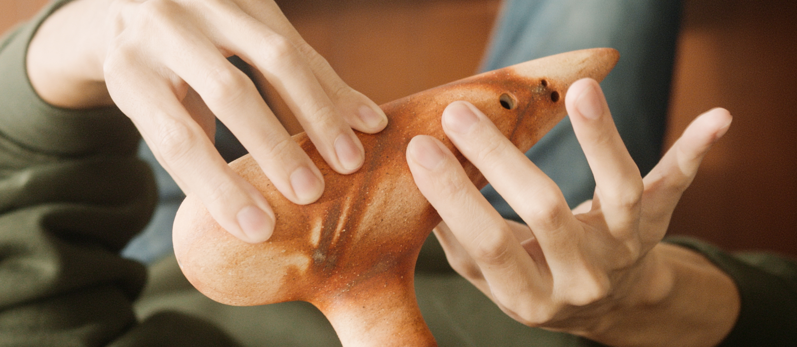
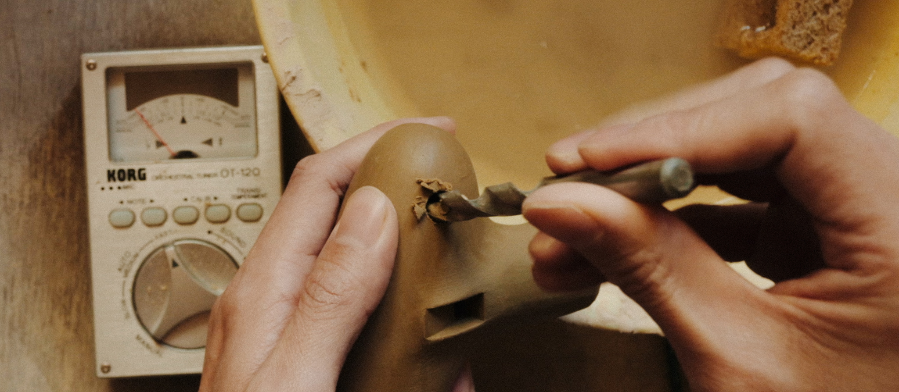

SHUNARTESÁN
Handmade Ocarina

An ocarina with a top note G
A single-chamber and a doble-hole for the right pinky.
It has 13 notes with 11 holes. The range is one note wider in the higher register without adding extra holes. It allows to perform more pieces that previosly requierd a double-chamber.
A variety of the models of 12 notes with 11 holes are also available.
They are durable and maintenable due to firing in higher temperture. The colors and textures are entirely created through glazing and firing, with no paints or coating applied.

Shun Yonemura
Born and raised in Japan.
Since 2024, has been producing ocarinas, with demonstration performances are accompanied by self-managed filming and recording.